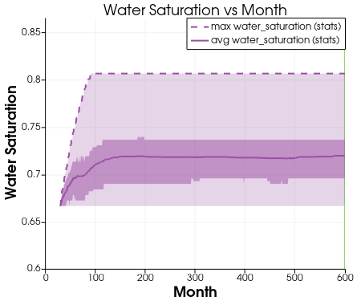
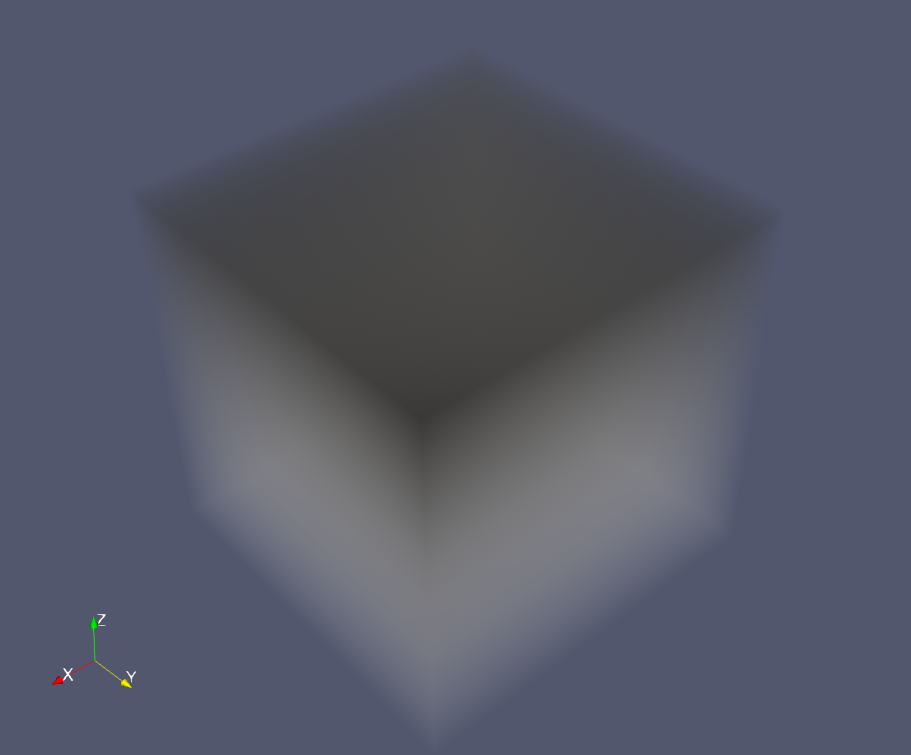

4.0 Exploring Water and Oil Data in 3D: Isosurfaces
The questions you should try to answer are as follows:
- Is the deepness influence the water saturation or oil’s pressure?
Yes, we can see that both for water saturation and oil pressure are affected by deepness.
- In what month(s) the water saturation reaches to it maximum?
Water saturation reaches to it maximum is in Month 158 while it highest average is when Month 599
- How would you recognise this maximum/minimum levels?
This maximum levels can be recognized using plot data over time filter and choose the enable the maximum in the parameter. However, for precision it is better to view in the spreadsheet view in the paraview.
Step taken for input data
- At the tool bar selecet file
- Select open
- Select .vtk file and click ok
Step to view isosurfaces
- At the pipeline select which dataset we want to add contour
- Click contour at the tool bar as highlighted at the image
- At the properties window at Isosurface add value range 25 to make it more clear
- Apply process 1-3 for water saturation, water pressure and oil pressure
Step to view plot data over time
- At the pipeline select which dataset we want to plot data over time
- Right click on the contour pipeline > Add filter > Data analysis > Plot Data over time
Step to view Volume Rendering
- At the pipeline select which dataset we want
- Then in the properties panel > choose Volume in the Representation Menu drop-down
Isosurfaces
The isosurface of oil pressure in 3D domain
Snapshot of the Pipeline and Filter:
Isosurfaces: Images for 7 months
Month 0 |
Month 100 |
Month 200 |
Month 300 |
Month 400 |
Month 500 |
Month 599 |
The isosurface of Water pressure in 3D domain
Snapshot of the Pipeline:

Isosurfaces: Images for 6 months
Month 0 |
Month 20 |
Month 50 |
Month 70 |
Month 100 |
Month 150 |
The isosurfaces of Water saturation in 3D domain
Snapshot of the Pipeline:

Isosurfaces: Images for 6 months
 Month 50 |
 Month 70 |
 Month 100 |
 Month 200 |
 Month 300 |
 Month 599 |
Comparing the patterns on Oil pressure, Water Pressure and Water Saturation
Oil Pressure |
Water Pressure |
 Water Saturation |
From the tables above, we can see the pattern of these three measurements are almost the same. When one measurement increases the other also increase.
- Oil Pressure vs Month
- - From the Graph below, we can see that the maximum oil pressure is when the month is 0
- - However, the highest average oil pressure is when the month is 135
- Water Pressure vs Month
- - From the Graph below, we can see that the maximum water pressure is when the month is 97
- - However, the highest average water pressure is when the month is 137
- Water Saturation vs Month
- - From this graph, we can see that the maximum water saturation is when the month is 158
- - However, the highest average water saturation is when the month is 599
To deduct the maximum value from the graph visually will be not precise. However we can use the filter in the paraview spreadsheet to see the maximum values.
Volume Rendering
The volume rendering of oil pressure in 3D domain
Snapshot of the Pipeline and Filter:
Volume rendering: Images for 4 months
Month 0 |
Month 100 |
Month 400 |
 Month 599 |
The volume rendering of Water pressure in 3D domain
Snapshot of the Pipeline:

Volume: Images for 4 months
Month 0 |
Month 40 |
Month 100 |
Month 599 |
The volume rendering of Water saturation in 3D domain
Snapshot of the Pipeline:

Volume: Images for 5 months
Month 0 |
Month 20 |
Month 50 |
Month 200 |
Month 599 |